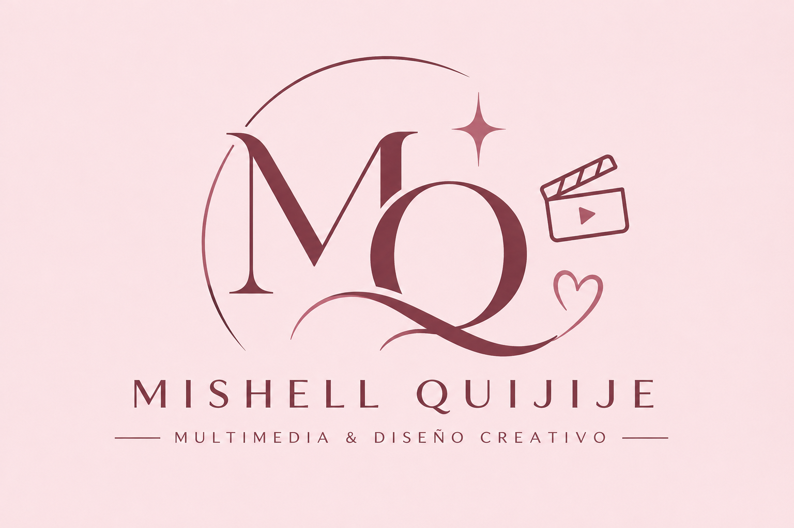

Animación en After Effects
Ejercicio de animación digital que explora el movimiento como recurso de comunicación visual.
Recursos: Ritmo, composición y edición audiovisual.
Abrir video Abrir video directamente
En esta sección presento mis ejercicios de animación y producción publicitaria. Presiona el botón de reproducción para ver cada trabajo.
Ejercicio de animación digital que explora el movimiento como recurso de comunicación visual.
Recursos: Ritmo, composición y edición audiovisual.
Abrir video Abrir video directamenteVideo promocional de Trigueña orientado a presentar su propuesta gastronómica mediante imágenes en movimiento.
Recursos: Narrativa publicitaria, montaje y presentación del producto.
Abrir video Abrir video directamente